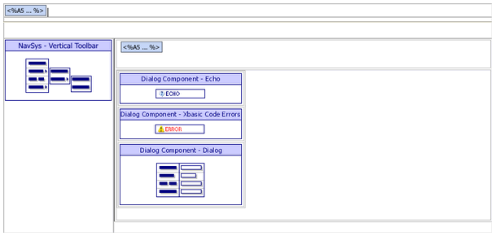
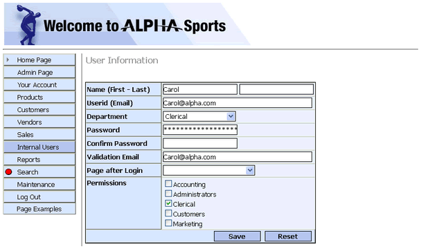

ASWUSERONE.A5W
Purpose
Internal users open the ASWUSERONE.A5W page to view or edit user information.
Description
The ASWPRODONE.A5W page receives the emp_id parameter in the calling URL. For example: aswuerone.a5w?emp_id=I0000005. The URL may also include a type parameter if the page was opened by the ASWUSERGET.A5W page. The ASWUSERONE.A5W page contains the NAV_INT navigation component and the DLG_INTUSER dialog component.
Links
The following links will display the ASWUSERONE.A5W page.
-
The Your Account > Your Information entry on the NAV_INT navigation component loads the ASWUSERGET.A5W page. If you have an employee id value saved in the security data, you are redirected back to the ASWINDEX.A5W page.
The ASWUSERLIST.A5W page redirects you to ASWUSERONE.A5W

ASWUSERONE.A5W in the WYSIWYG tab of the HTML Editor

ASWUSERONE.A5W in the Browser
Edits to the Page Source
When you look at ASWUSERONE.A5W with the Source tab of the HTML Editor, you will see a large amount of HTML and Xbasic code. The HTML Editor placed almost all of it there automatically, as we used the WYSIWYG tab to place the tables, text, graphics, and components on the page. There are a few interesting exceptions, where we changed the page code through the Source tab.
The code on the page determines if a valid emp_id value has been passed to the page. If no value is passed, the user is redirected back to the ASWINDEX.A5W page. If a value for type has been passed to the page and type=1, the page is opening for the current logged in user and the variable FlagUser is set to TRUE.
|
<%a5 if eval_valid("emp_id") = .F.' required response.redirect("aswindex.a5w") end end if dim FlagUser as l = .F. if eval_valid("type") = .T. if type = "1" ' value passed by userlist FlagUser = .T. ' showing current logged in internal user - 'type=1' end if end if if FlagUser = .f. '----- Get user values if logged in to show personalized welcome message - login not required dim pUser as p a5ws_logged_in_user_values(pUser,request,session) if pUser.ulink <> "" if pUser.ulink = emp_id ' opening record for current logged in user FlagUser = .T. end if end if end if %> |
If FlagUser is TRUE, location = "Your Account" statement highlights the Your Account entry in the menu. If FlagUser is False, the location = "Internal Users" statement highlights the Internal Users entry in the menu
|
with tmpl_NAV_INT if FlagUser = .T. location = "Your Account" ' highlight the parent nav tab else location = "Internal Users" end if end with |
The A5W_INCLUDE() statement is in the top row of the table. It loads TOPPAGE.A5W and displays a standard page header.
|
<body> <p> <table cellSpacing=0 cellPadding=0 width="800" border=0> <tr> <td colspan="2"> <%a5 a5w_include("toppage.a5w") %> </td> </tr> |
A header is added in a row of the table to show a different header if the page is opening for the current user (FlagUser=.T.) or opening for any user.
|
<tr> <td class="header"><h3> <%a5 ?if(FlagUser,"Your Information","User Information") %></h3></td> </tr> |
Page Security Information
Login Required
Groups Allowed > Accounting, Administrators, Clerical, Marketing
See Also